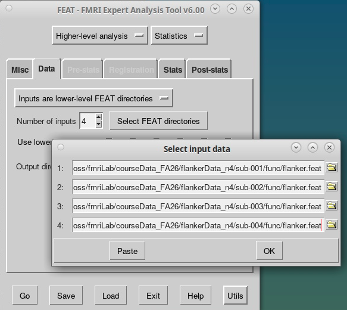
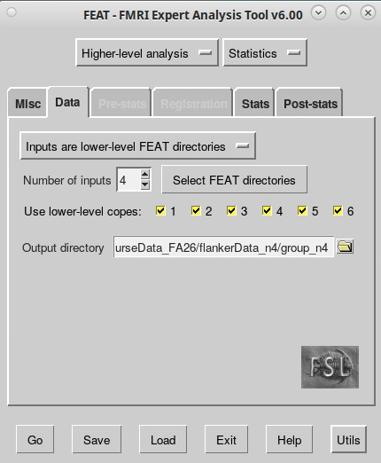
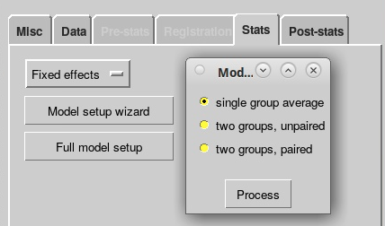
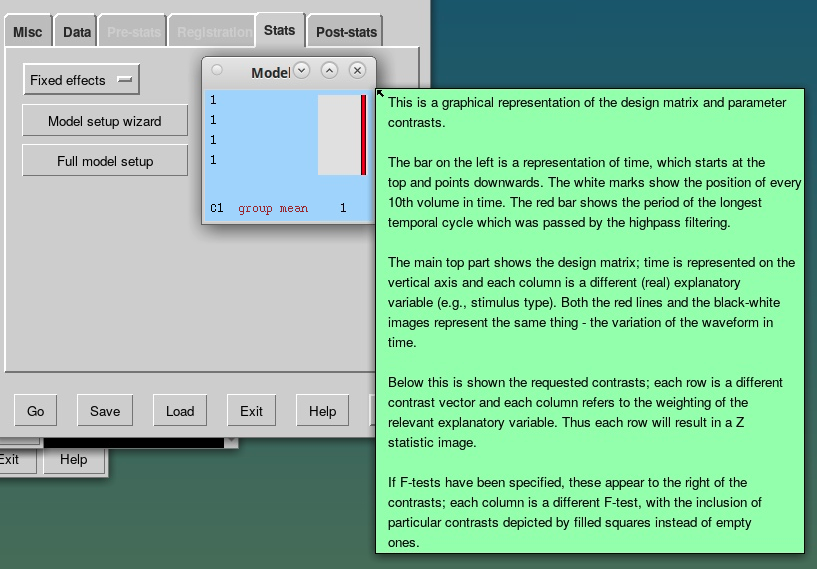
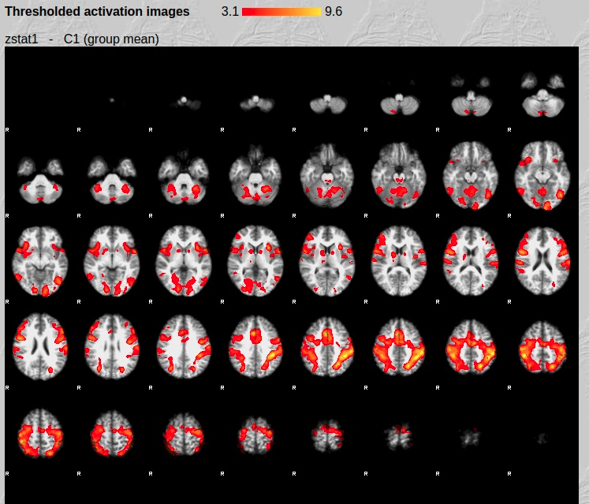
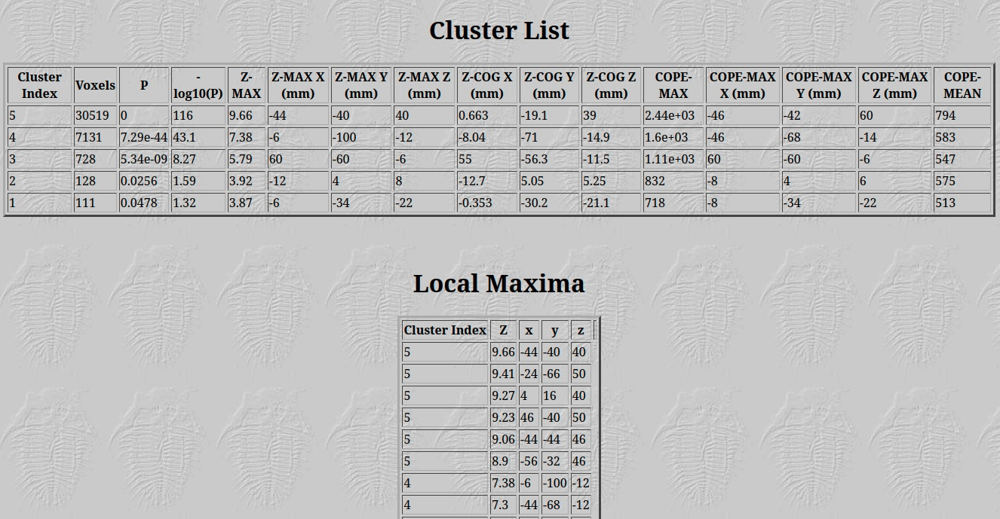

Lab: Group-Level fMRI Analysis in FSL FEAT
Learning objectives
By the end of this practical, you should be able to:
- Use the FEAT GUI to create a group-level map of task-related BOLD activation.
- Locate and interpret group-level results using the FEAT HTML report.
Before you begin
Access FastX: FastX remote login.
Prerequisite: You should have completed the first-level analyses for sub-001, sub-002, sub-003, and sub-004. Each subject should have a flanker.feat output directory.
In this lab, we will combine the four subjects' first-level results to examine the average activation for each of the six contrasts from the single-subject analyses:
- Congruent > baseline (
con > baseline) - Neutral > baseline (
neu > baseline) - Incongruent > baseline (
inc > baseline) - Errors > baseline (
errors > baseline) - Incongruent > neutral (
inc > neu) - Congruent > neutral (
con > neu)
1. Open the group-analysis GUI
-
Open a terminal and move to your data directory:
cd ~/fmriLab/ -
Type
fsland select FEAT FMRI analysis. - In the top-left menu of FEAT, select Higher-level analysis.
2. Data tab: Select input and output directories
- Keep Inputs are lower-level FEAT directories selected.
- Set Number of inputs to
4, because we have four subjects. - Click Select FEAT directories and select the
flanker.featdirectory for each subject.

- Keep Use lower-level copes selected. These correspond to the six contrasts specified in the first-level analyses.
- Set the output directory within
derivatives, naming the group-level outputgroup_n4.

3. Stats tab: Set up the group model
- Select Fixed effects.
- Select Model setup wizard.
- Keep the default Single-group average model and click Process.

Why fixed effects? In this teaching example, we are estimating the average effect for these four participants. A fixed-effects analysis does not support generalizing the result to a larger population. We are using it to learn the group-analysis workflow with a very small sample.
Inspect the group model

Discuss: What does the red line represent in the group model? How does this model combine information across the four participants?
4. Post-stats tab
- Leave the Post-stats settings at their defaults for this lab.
5. Run the analysis and inspect the report
- Click Go to run the higher-level FEAT analysis.
- When the analysis finishes, open its HTML report. It may open automatically in your browser; otherwise, find it in your group-level output directory.
Check the registration summary
- Open Registration summary.
- Confirm that the expected four subjects are included.
- Inspect the image overlays: are the brains aligned as expected in standard space?
Examine the group-level activation maps
- Open Results.
- Select Lower-level contrast 3 (
inc). - Compare your output with the example below.

- Confirm that the expected contrast is displayed.
- Look for plausible activation clusters and any obvious image artifacts.
Examine the statistical results table
Click the activation image in the HTML report to view the corresponding results table.

Discuss: What information is reported in the table? How does it relate to the activation map?
6. Lab submission: Evidence of completion
Submit two PDFs from your higher-level FEAT analysis to the lab assignment on ICON.
- Registration summary PDF: Open Registration summary in your higher-level FEAT HTML report and print/save it as a PDF. The TA will check that the expected subjects are included and that the image underlays and overlays are aligned appropriately.
- Group results PDF for
con > neu: In the higher-level FEAT HTML report, open the results summary for thecon > neucontrast and print/save that page as a PDF. The TA will check that the analysis completed and that the expected contrast and statistical map are present.
Before submitting, verify:
- Both PDFs come from the higher-level group analysis (
group_n4), not an individual subject'sflanker.featreport. - The registration PDF shows the expected input subjects and alignment.
- The results PDF is for the
con > neucontrast. - Both PDFs are readable and uploaded to ICON.